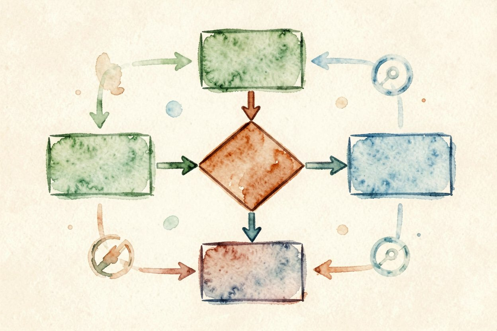
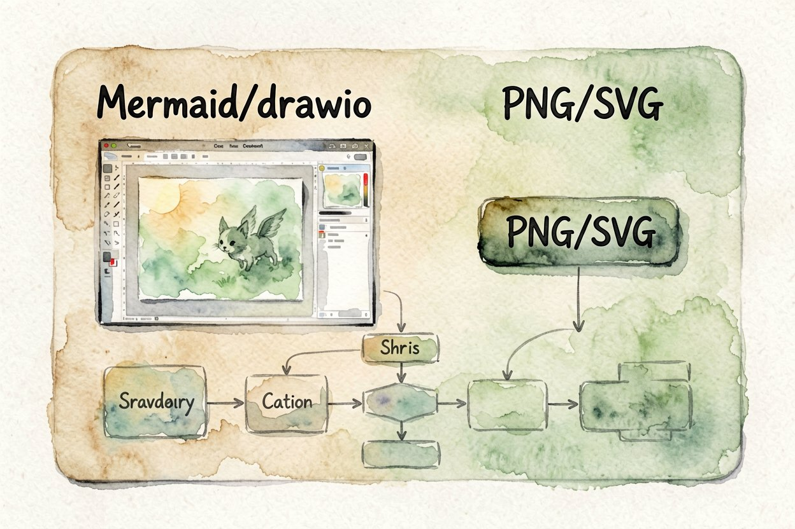
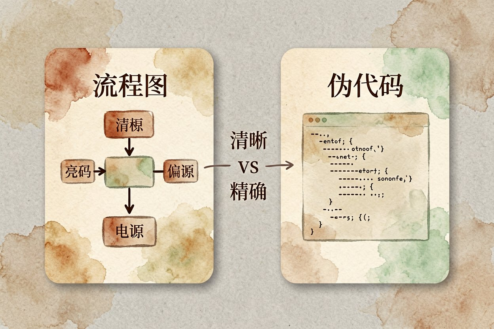
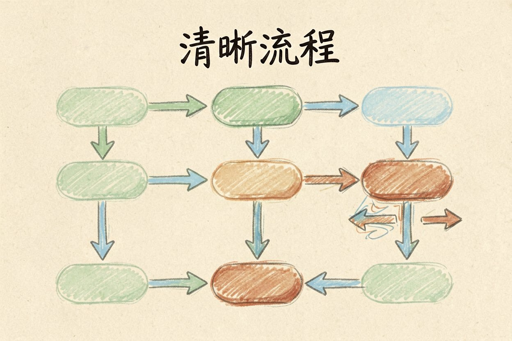

用 AI 画流程图：把步骤变成图
讲清楚一个流程，文字越写越乱。用 AI 画流程图，把步骤丢给它，出来的就是规范方框加箭头。
AI 画流程图是什么：一句话解释

AI 画流程图，就是你写一段流程描述，大模型输出一张规范的方框加箭头图。判断、循环、并行的结构它都能标出来，比手画快得多。
它和AI 思维导图不一样：思维导图发散地整理想法，流程图严格地描述先后。和它搭档的还有AI 做信息图，一个讲过程一个讲结论。
写清步骤的三要素
第一要素是起点和终点。从哪开始、到哪结束先说清，图才有边界，不会无限展开。
第二要素是判断点。哪里要分叉、什么条件走哪边，用「如果……否则……」写明白，它才画得出菱形。
第三要素是顺序词。先、然后、同时、循环，这些词帮它判断箭头方向，乱了它会画反。
请把以下流程画成流程图（Mermaid 语法）：
用户提交表单 → 校验格式 → 格式错则提示重填 →
格式对则写入数据库 → 发送通知 → 结束。
其中「校验格式」为判断节点。选格式与导出

画完自己照图走一遍，卡住的那一步往往就是逻辑还没讲清楚的地方。
节点用动宾短句，箭头只表先后或判断，读者扫一眼就懂。导出前把分叉和合并标清楚，免得流程看着顺、实际跑不通。复杂流程拆成主图加子图，别硬塞进一张。
要嵌文档选 Mermaid 或 draw.io，能二次编辑。要直接发图选 PNG 或 SVG，SVG 放大不糊。
和AI 项目计划配合时，把大计划拆成子流程逐个出图，比一整张巨图清楚。
提示词写法参考AI 提示词写法，把「输出格式」写死，它就不会给你一段散文了。
和伪代码怎么选

给人看的选流程图。给非技术的同事、客户讲逻辑，图比代码友好，一眼看全走向。
给机器和开发选伪代码。要落地实现、标变量和分支，伪代码更精确，流程图反而啰嗦。
同一段逻辑可以两版都出。流程图对外沟通，伪代码对内实现，各取所需不冲突。
别让图绕弯
箭头别乱交叉。它偶尔为了省事把线拉得横穿全图，你看着乱就让它重排。
别出现无解回环。它有时画出「A→B→A」的死循环还没标注，这种要你发现并打断。
每个节点写短。一个框里塞三行字，图就失去一目了然的意义。节点名短，箭头才读得顺。
还有一个容易被忽略的细节是节点粒度的统一。有的地方写「处理订单」，有的地方写「读取数据库里的订单记录并校验状态」，粗细不一图就乱。约定好一层只讲一个层级，要么都讲业务步骤要么都讲系统动作，读者才不用来回切换。给关键节点加编号也管用，正文说「见步骤 3」、图里标「3」，对照不迷路。复杂流程拆成总图加子图，总图看全貌、子图看细节，比一张塞满的巨图好读十倍。
别让 AI 替你决定流程对不对。AI 画流程图只是把你已经想清的步骤画标准，逻辑本身对不对，得你这个懂业务的人拍板。

本文信息核对于 2026-08-14。AI 产品的价格、免费额度与功能变动频繁，实际以各工具官网当前说明为准。